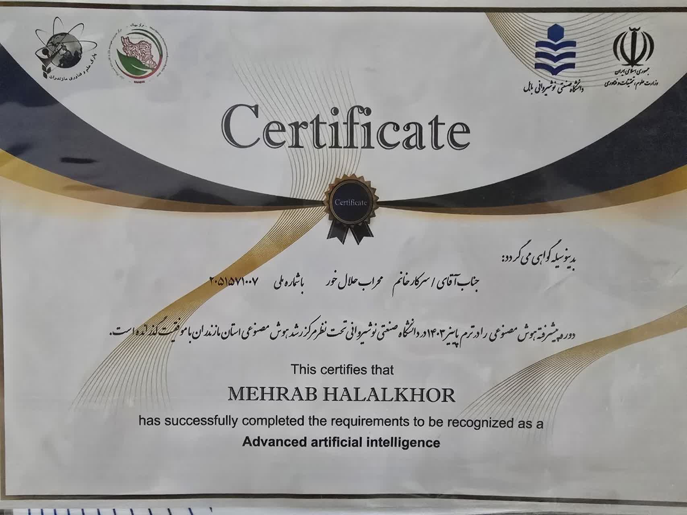
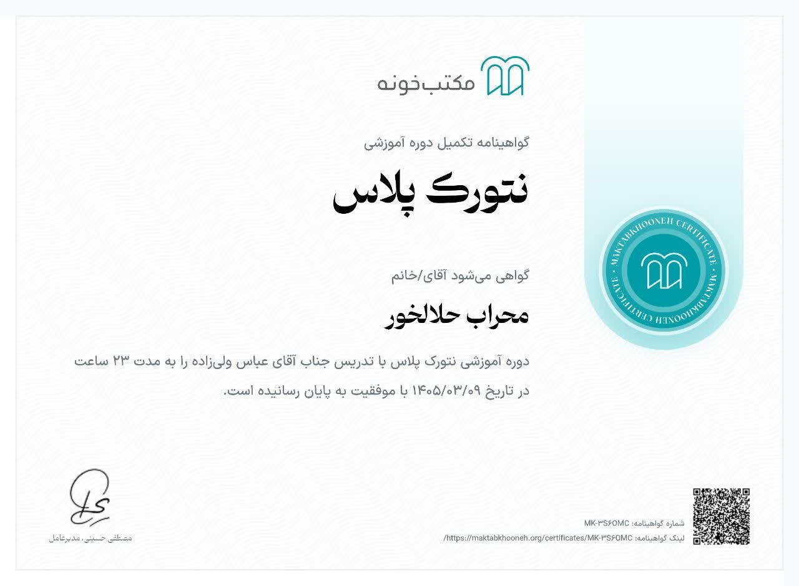
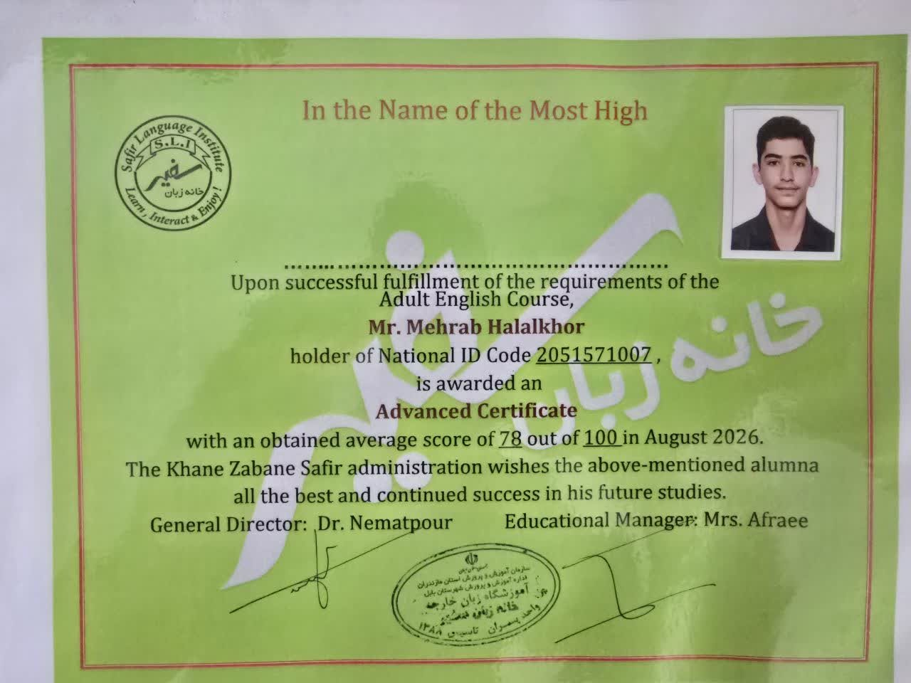
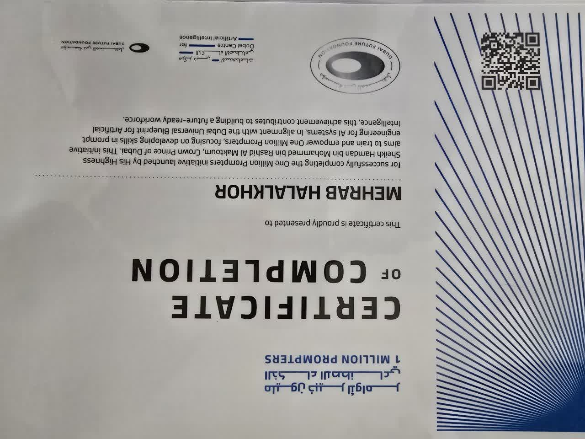
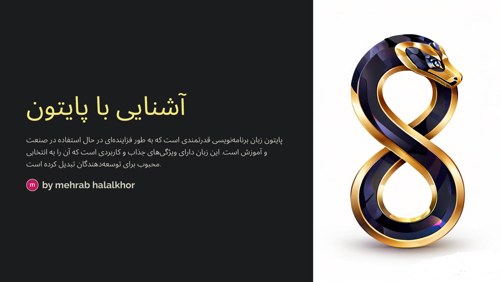

آشنایی با پایتون
مقاله/آموزش فارسی درباره زبان برنامهنویسی پایتون و کاربردهای آن در صنعت و آموزش.
فایل آپلودشده در این پروژه با فرمت PSD بود؛ یک نسخه PDF از صفحه اول آن نیز برای مشاهده در سایت آماده شده است.Developer • Programmer • Technology Enthusiast
توسعهدهنده نرمافزار با تمرکز روی هوش مصنوعی، امنیت سایبری، مهندسی وب و فناوریهای مالی.
$ whoami
$ focus --current
$ status
برنامهنویس و توسعهدهندهای آیندهنگر با تمرکز بر نرمافزار، هوش مصنوعی، امنیت سایبری و طراحی محصولات وب مدرن.
تجربه کار با Python، JavaScript، React، Next.js، APIها، سرویسهای هوش مصنوعی، Git/GitHub و محیطهای توسعه وب دارم و روی پروژههای مرتبط با پلتفرمهای مالی، تحلیل داده و زیرساختهای نرمافزاری کار کردهام.
همچنین دارای گواهیهای آموزشی در هوش مصنوعی، شبکه، زبان انگلیسی و Prompt Engineering هستم.
Python · JavaScript · HTML · CSS · SQL
Neural Networks · NLP · Data Analysis · AI APIs
Security Engineering · Anomaly Detection · Cryptography
React · Next.js · APIs · UX · High-Tech UI
Advanced English · TOEFL · سفیر · Professional Communication
TradingView · Risk Management · Position Sizing · Leverage
طراحی و توسعه یک پلتفرم پیشرفته برای تجارت و تحلیل مالی با تمرکز بر سرعت، تجربه کاربری و سیستمهای هوشمند.
سیستم هوش مصنوعی برای تحلیل دادههای بزرگ و بررسی روندهای بازار.
پلتفرم ارتباطی چندزبانه با تمرکز بر تجربه کاربری و معماری امن.
راهحل مقیاسپذیر برای شناسایی الگوهای غیرعادی در دادههای حجیم.
چارچوب سفارشی برای توسعه سریع، عملکرد بهتر و کنترل بیشتر روی معماری وب.
دعوتنامه رسمی همکاری در حوزه امنیت سایبری و توسعه نرمافزار پیشرفته.
کسب رتبه اعلامشده در رتبهبندی جهانی Termux.
امتیاز اعلامشده در تستهای نفوذ و ارزیابی امنیتی.
طبقهبندی اعلامشده برای زیرساخت امنیتی پروژه.
در سناریوی توصیفشده، در صورت شکست در چالش Python، IP به CERT-India گزارش میشود.
قابلیت Active Defense و مهندسی معکوس ترافیک مخرب در معماری توصیفشده.
پیشنهاد نقش رهبری در عملیات سایبری فرودگاه بینالمللی ایندیرا گاندی.
حقوق پیشنهادی سالانه ۲۵ لک روپیه بههمراه سهام شرکت در پیشنهاد ارائهشده.
روی هر مدرک کلیک کنید تا تصویر کامل آن را ببینید.

دانشگاه صنعتی نوشیروانی بابل
گواهی گذراندن دوره پیشرفته هوش مصنوعی و شناسایی به عنوان دارنده گواهی Advanced Artificial Intelligence.
مکتبخانه · ۱۴۰۵/۰۳/۰۹
دوره آموزشی نتورک پلاس با تدریس جناب آقای عباس ولیزاده، به مدت ۲۳ ساعت.
Safir Language Institute · August 2026
میانگین نمره ۷۸ از ۱۰۰ در دوره بزرگسالان؛ گواهی سطح Advanced.
Dubai Future Foundation
گواهی تکمیل برنامه One Million Prompters با تمرکز بر مهندسی پرامپت برای سیستمهای AI.
مقاله/آموزش فارسی درباره زبان برنامهنویسی پایتون و کاربردهای آن در صنعت و آموزش.
فایل آپلودشده در این پروژه با فرمت PSD بود؛ یک نسخه PDF از صفحه اول آن نیز برای مشاهده در سایت آماده شده است.دانشگاه صنعتی نوشیروانی بابل
مکتبخانه
موسسه زبان سفیر
Dubai Future Foundation
زبان مادری
Advanced · TOEFL · Safir score: 78/100